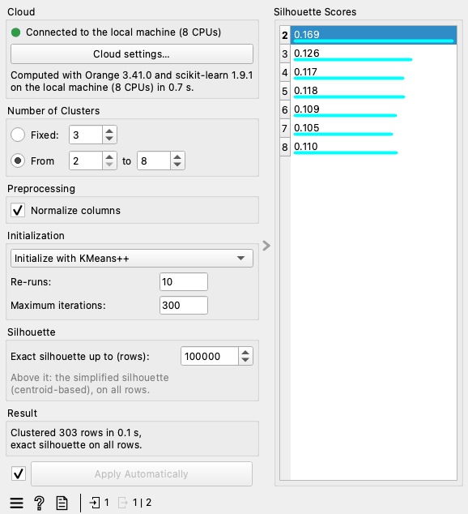

Cloud widgets
Cloud k-Means
k-Means clustering of all rows of a cloud table, on the machine, with silhouette scores computed on all rows.

Inputs
- Data: a cloud table, for example from Cloud File
Outputs
- Data: the cloud table with Cluster and Silhouette meta columns
- Centroids: the clusters' centres, a small table on your computer
Like every Cloud widget, it has a Cloud box at the top: whether a machine is connected, Cloud settings… and Stop machine, and what the last job ran with, how long it took and what it cost. See Cloud widgets.
How to use it
The options are those of Orange's k-Means, and the clusters are the same as Orange's:
- Number of clusters: fixed, or a range. For a range, the table shows the mean silhouette of each number and selects the best; click another to output it.
- Normalize columns, the initialization, re-runs and maximum iterations.
- Exact silhouette up to: up to this many rows (100,000 by default) the silhouette is exact. Above it, the machine computes the simplified silhouette (each row's distance to its cluster's centre against the nearest other centre) on all rows, and the column is called Simplified silhouette. The exact silhouette grows with the square of the rows.
Orange's own k-Means computes the silhouette from a sample of 5,000 rows on bigger data; this widget never uses a sample.